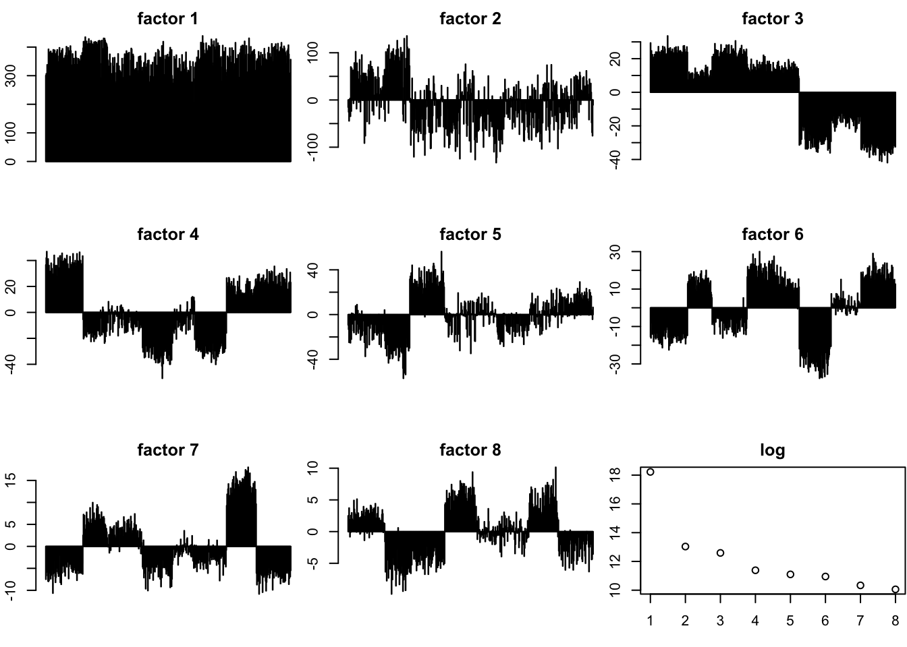

Flash on HumanTungiPSC
wei wang
2017-02-14
Last updated: 2017-02-15
Code version: c0afed5
# Biobase is for accessing expressionSet objects
library(Biobase)
# Load Buettner data
devtools::install_github("jhsiao999/singleCellRNASeqHumanTungiPSC")
library(singleCellRNASeqHumanTungiPSC)
# Extract expression data
eset <- get(data("HumanTungiPSC"))
# Access the count matrix
counts <- exprs(eset)
dim(counts)[1] 12235 560Binary_count = 1 * (counts != 0)
Boolean_count = 2*( Binary_count - 1/2)
# Access cell sample information
#pData(eset)
#cluster <- pData(eset)$Cluster
#table(cluster)
barlabels = pData(HumanTungiPSC)
total_counts = apply(counts,2,sum)FLASH on the log CPM data
total log CPM data without imputation
total_logcpm = readRDS("~/HG/LogisticFlash_workflow/data/singelcell/HumanTungiPSC/logcpm/bflash_var_col.rds")
par(mfrow = c(3,3),mar = c(5,4,4,2) - 1.9)
for(i in 1:16) barplot(total_logcpm$l[,i])pve = sapply(seq(1,26),function(x){sum((total_logcpm$l[,x] %*% t(total_logcpm$f[,x]))^2)})
plot(pve)
plot(log(pve),main = "log")missing pattern
MissPattern = readRDS("~/HG/LogisticFlash/data/MissPatternHumanTungiPSC_K20.rds")
par(mfrow = c(3,3),mar = c(5,4,4,2) - 1.9)
for( i in 1:8) barplot(MissPattern$f[,i],main = paste("factor",i))
pve = sapply(seq(1,8),function(x){sum((MissPattern$l[,x] %*% t(MissPattern$f[,x]))^2)})
# plot(pve)
plot(log(pve),main = "log")
non_miss_logcpm = readRDS("~/HG/LogisticFlash_workflow/data/singelcell/HumanTungiPSC/logcpm/bflash_non_miss_var_col.rds")
par(mfrow = c(3,3),mar = c(5,4,4,2) - 1.9)
for(i in 1:16) barplot(non_miss_logcpm$l[,i])pve = sapply(seq(1,30),function(x){sum((non_miss_logcpm$l[,x] %*% t(non_miss_logcpm$f[,x]))^2)})
plot(pve)
plot(log(pve),main = "log")log cpm with impute
logcpm_imput = readRDS("~/HG/LogisticFlash_workflow/data/singelcell/HumanTungiPSC/logcpm/gflash_var_col_imput.rds")
par(mfrow = c(3,3),mar = c(5,4,4,2) - 1.9)
for(i in 1:19) barplot(logcpm_imput$l[,i])pve = sapply(seq(1,19),function(x){sum((logcpm_imput$l[,x] %*% t(logcpm_imput$f[,x]))^2)})
plot(pve)
plot(log(pve),main = "log")compare the impute and non-impute methods
I find the imputation from flash have small difference from the logcpm from voom.
par(mfrow = c(3,3),mar = c(5,4,4,2) - 1.9)
for(i in 1:9) plot(total_logcpm$l[,i],logcpm_imput$l[,i])does the imputaion help or not?
par(mfrow = c(2,3),mar = c(5,4,4,2) - 1.9)
library(ggplot2)
plot_df = data.frame(total_logcpm$l[,1:8])
colnames(plot_df) = c("f1","f2","f3","f4","f5","f6","f7","f8")
plot_df$total_count = total_counts
p1 <- ggplot(plot_df, aes(total_count, f4, label = (as.character(factor(barlabels$individual )) )), parse = FALSE)
p1 + geom_label(aes(fill = factor(barlabels$batch)), colour = "white", fontface = "bold")p1 <- ggplot(plot_df, aes(total_count, f6, label = (as.character(factor(barlabels$individual )) )), parse = FALSE)
p1 + geom_label(aes(fill = factor(barlabels$batch)), colour = "white", fontface = "bold")p1 <- ggplot(plot_df, aes(total_count, f7, label = (as.character(factor(barlabels$individual )) )), parse = FALSE)
p1 + geom_label(aes(fill = factor(barlabels$batch)), colour = "white", fontface = "bold")par(mfrow = c(2,3),mar = c(5,4,4,2) - 1.9)
library(ggplot2)
plot_df = data.frame(logcpm_imput$l[,1:8])
colnames(plot_df) = c("f1","f2","f3","f4","f5","f6","f7","f8")
plot_df$total_count = total_counts
p1 <- ggplot(plot_df, aes(total_count, f4, label = (as.character(factor(barlabels$individual )) )), parse = FALSE)
p1 + geom_label(aes(fill = factor(barlabels$batch)), colour = "white", fontface = "bold")p1 <- ggplot(plot_df, aes(total_count, f6, label = (as.character(factor(barlabels$individual )) )), parse = FALSE)
p1 + geom_label(aes(fill = factor(barlabels$batch)), colour = "white", fontface = "bold")
p1 <- ggplot(plot_df, aes(total_count, f7, label = (as.character(factor(barlabels$individual )) )), parse = FALSE)
p1 + geom_label(aes(fill = factor(barlabels$batch)), colour = "white", fontface = "bold")what missing patterns learns?
library(ggplot2)
plot_df = data.frame(logcpm_imput$l[,1:8])
colnames(plot_df) = c("f1","f2","f3","f4","f5","f6","f7","f8")
plot_df$total_count = total_counts
p1 <- ggplot(plot_df, aes(total_count, f2, label = (as.character(factor(barlabels$individual )) )), parse = FALSE)
p1 + geom_label(aes(fill = factor(barlabels$individual)), colour = "white", fontface = "bold")p1 <- ggplot(plot_df, aes(total_count, f3, label = (as.character(factor(barlabels$individual )) )), parse = FALSE)
p1 + geom_label(aes(fill = factor(barlabels$individual)), colour = "white", fontface = "bold")par(mfrow = c(3,3),mar = c(5,4,4,2) - 1.9)
which_ercc <- grep("ERCC", rownames(counts))
plot(total_logcpm$f[,2],MissPattern$l[-which_ercc,2])
plot(total_logcpm$f[,3],MissPattern$l[-which_ercc,3])
plot(total_logcpm$f[,4],MissPattern$l[-which_ercc,4])
plot(logcpm_imput$f[,2],MissPattern$l[-which_ercc,2])
plot(logcpm_imput$f[,3],MissPattern$l[-which_ercc,3])
plot(logcpm_imput$f[,4],MissPattern$l[-which_ercc,4])
plot(total_logcpm$f[,2],logcpm_imput$f[,2])
plot(total_logcpm$f[,3],logcpm_imput$f[,3])
plot(total_logcpm$f[,4],logcpm_imput$f[,4])cor(total_logcpm$f[,2],MissPattern$l[-which_ercc,2])[1] 0.3710225cor(total_logcpm$f[,3],MissPattern$l[-which_ercc,3])[1] -0.7513462cor(total_logcpm$f[,4],MissPattern$l[-which_ercc,4])[1] 0.4606355cor(logcpm_imput$f[,2],MissPattern$l[-which_ercc,2])[1] -0.6254888cor(logcpm_imput$f[,3],MissPattern$l[-which_ercc,3])[1] 0.4003885cor(logcpm_imput$f[,4],MissPattern$l[-which_ercc,4])[1] -0.242261cor(total_logcpm$f[,2],logcpm_imput$f[,2])[1] -0.8326584cor(total_logcpm$f[,3],logcpm_imput$f[,3])[1] -0.8084712cor(total_logcpm$f[,4],logcpm_imput$f[,4])[1] -0.8272185which(logcpm_imput$l[,3]>0) [1] 1 2 3 4 5 6 7 8 9 10 11 12 13 14 15 16 17
[18] 18 19 20 21 22 23 24 25 26 27 28 29 30 31 32 33 34
[35] 35 36 37 38 39 40 41 42 43 44 45 46 47 48 49 50 51
[52] 52 53 54 55 56 57 58 59 60 61 62 63 64 65 66 67 68
[69] 69 70 71 72 73 74 75 76 77 78 79 80 81 82 83 84 85
[86] 86 87 88 89 90 91 92 93 94 95 96 97 98 99 100 101 102
[103] 103 104 105 106 107 108 109 110 111 112 113 114 115 116 117 118 119
[120] 120 121 122 123 124 125 126 127 128 129 130 131 132 133 134 135 136
[137] 137 138 139 140 141 142 143 147 148 149 151 152 153 154 155 156 158
[154] 161 162 163 164 165 166 168 169 170 171 173 174 175 178 179 180 181
[171] 182 183 184 185 186 187 188 189 190 191 192 193 194 195 196 197 198
[188] 199 200 201 202 203 204 205 206 208 209 210 211 213 214 215 216 217
[205] 218 220 222 223 224 225 226 228 229 230 231 232 233 234 235 236 237
[222] 238 239 240 241 243 244 245 247 248 249 250 251 252 253 254 255 256
[239] 257 258 259 260 261 262 263 264 265 266 267 268 269 270 271 272 273
[256] 274 275 276 277 278 279 280 281 282 283 284 285 286 287 288 289 290
[273] 291 292 293 294 295 296 298 299 300 301 303 305 306 307 308 309 310
[290] 311 312 313 315 316 317 318 319 320 321 322 324 325 326 328 329 330
[307] 331 332 445 475colnames(counts)[445][1] "NA19239.r2.D12"any_other = data.frame(rawcount = as.vector(counts[,c(400:444,446:500)]))
out_lier = data.frame(rawcount = counts[,445])
any_other$name = "others"
out_lier$name = colnames(counts)[445]
hist_compare <- rbind(any_other, out_lier)
ggplot(hist_compare, aes(rawcount, fill = name)) + geom_density(alpha = 0.2)any_other = data.frame(rawcount = as.vector(counts[,c(437:445)]))
out_lier = data.frame(rawcount = counts[,445])
any_other$name = "others"
out_lier$name = colnames(counts)[445]
hist_compare <- rbind(any_other, out_lier)
ggplot(hist_compare, aes(rawcount, fill = name)) + geom_density(alpha = 0.2)ks.test(counts[,445],as.vector(counts[,c(437:445)]))Warning in ks.test(counts[, 445], as.vector(counts[, c(437:445)])): p-value
will be approximate in the presence of ties
Two-sample Kolmogorov-Smirnov test
data: counts[, 445] and as.vector(counts[, c(437:445)])
D = 0.023248, p-value = 1.354e-05
alternative hypothesis: two-sidedpar(mfrow = c(2,2),mar = c(5,4,4,2) - 1.9)
plot(MissPattern$f[440:450,3])
plot(total_logcpm$l[440:450,3])
plot(logcpm_imput$l[440:450,3])# in the same batch same well
apply(counts[,437:445],2,sum)NA19239.r2.D01 NA19239.r2.D02 NA19239.r2.D03 NA19239.r2.D04 NA19239.r2.D05
68863 66074 45985 79236 51870
NA19239.r2.D06 NA19239.r2.D08 NA19239.r2.D11 NA19239.r2.D12
53926 39580 82083 50016 apply(Binary_count[,440:450],2,sum)NA19239.r2.D04 NA19239.r2.D05 NA19239.r2.D06 NA19239.r2.D08 NA19239.r2.D11
8715 7757 7787 7264 8722
NA19239.r2.D12 NA19239.r2.E01 NA19239.r2.E02 NA19239.r2.E04 NA19239.r2.E05
7982 8883 8932 8785 8559
NA19239.r2.E06
8993 batch_Dr2 = counts[,437:445]
cor(counts[,445],counts[,437])[1] 0.8699784image(cor(batch_Dr2))image(cor(Binary_count[,437:445]))Session Information
sessionInfo()R version 3.3.0 (2016-05-03)
Platform: x86_64-apple-darwin13.4.0 (64-bit)
Running under: OS X 10.12.3 (unknown)
locale:
[1] en_US.UTF-8/en_US.UTF-8/en_US.UTF-8/C/en_US.UTF-8/en_US.UTF-8
attached base packages:
[1] parallel stats graphics grDevices utils datasets methods
[8] base
other attached packages:
[1] workflowr_0.3.0
[2] rmarkdown_1.3
[3] ggplot2_2.2.1
[4] MASS_7.3-45
[5] singleCellRNASeqMouseJaitinSpleen_0.99.0
[6] ashr_2.0.5
[7] limma_3.24.15
[8] Biobase_2.28.0
[9] BiocGenerics_0.14.0
loaded via a namespace (and not attached):
[1] Rcpp_0.12.9
[2] plyr_1.8.4
[3] BiocInstaller_1.18.5
[4] git2r_0.18.0
[5] singleCellRNASeqHumanTungiPSC_0.99.0
[6] iterators_1.0.8
[7] tools_3.3.0
[8] digest_0.6.12
[9] tibble_1.2
[10] gtable_0.2.0
[11] evaluate_0.10
[12] memoise_1.0.0
[13] lattice_0.20-34
[14] Matrix_1.2-8
[15] foreach_1.4.3
[16] curl_2.3
[17] yaml_2.1.14
[18] withr_1.0.2
[19] httr_1.2.1
[20] stringr_1.1.0
[21] knitr_1.15.1
[22] devtools_1.12.0
[23] REBayes_0.73
[24] rprojroot_1.2
[25] grid_3.3.0
[26] R6_2.2.0
[27] irlba_2.1.2
[28] flashr_0.1.1
[29] magrittr_1.5
[30] scales_0.4.1
[31] backports_1.0.5
[32] codetools_0.2-15
[33] htmltools_0.3.5
[34] assertthat_0.1
[35] colorspace_1.3-2
[36] labeling_0.3
[37] stringi_1.1.2
[38] Rmosek_7.1.2
[39] lazyeval_0.2.0
[40] munsell_0.4.3
[41] doParallel_1.0.10
[42] pscl_1.4.9
[43] truncnorm_1.0-7
[44] SQUAREM_2016.8-2 This R Markdown site was created with workflowr